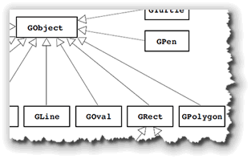
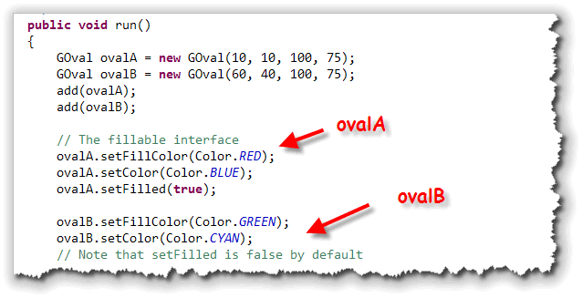
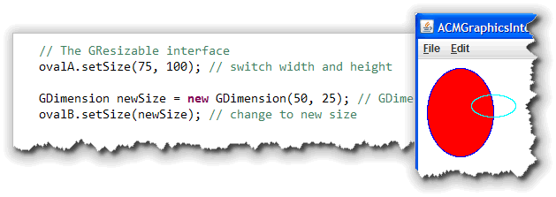
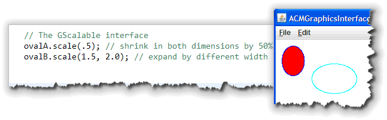

Whe theGObject class has
methods to change the
location of an object, there are no methods to change
the size of an object. Just as only some objects are
"fillable", only some objects are "scalable" and "resizable".
Since these are capabilities that not all objects have,
the GObject class does not contain any methods
to perform these operations.
- Three of the shape classes in the ACM Graphics
package—
GRect,GOvalandGImage—can be resized. - These three
classes, and four others—
GArc,GCompound,GLineandGPolygon—can also be scaled. - Finally, five classes—
GArc,GOval,GPen,GPolygonandGRect—are also fillable.
Each of these capabilities is defined by an interface that these different classes implement. An interface is a way of defining the behavior or methods that a class contains, without defining the family of classes that it belongs to. You'll study interfaces a little later in the semester.
Right now, we'll look at the methods defined in each of these interfaces, using a small sample program named ACMGraphicsInterfaces.java, located in this chapter's code folder.
The GFillable Interface
The classes that implement the GFillable interface
all have the ability to paint a solid center, using a separate
brush color. These include the closed shapes GRect,
GOval and GPolygon, as well as the
GArc and the free-hand drawing class, GPen.
If an object is fillable, you can specify whether the center should
be solid or hollow like this:

The color used for the outline does not have to be the same as the color used to fill the center of the shape.- You met the
setColor()method earlier, which sets the outline color for allGObjects. In this example, the outline forovalAis drawn with a blue pen, while the outline forovalBis drawn with a cyan pen. - For fillable objects, the
setFillColor()method specifies the brush used to fill the interior of the shape. In this example,ovalAis filled with a red brush, whileovalBis filled with a green brush. - No matter what brush is used to fill the interior of the
object, it is only used if directed by calling the
setFilled()method, passingtrueas the parameter. If you don't do this, (or, if you callsetFilled(false), then the shape outline is drawn, but the center remains hollow, likeovalBin my example here.
Of course, if you want a solid, or non-outlined shape, just use
the same color for the outline as well as for the fill color.
Here's what this code looks like when it runs:

The GResizable Interface
Images, ovals and rectangles are all resizable. There are two
versions of two methods (for a total of four) defined in the
GResizable interface.
The setSize() methods allow you to change the
width and height of an existing object, but leaves the location
as it is. You can supply separate parameters for the width
and height, or a single parameter wrapped up in a
GDimension object:

If you want to change the location at the same time as you change
the size, then the two versions of setBounds() are
what you want:
oval.setBounds(0, 0, 100, 50); // Change location, width and height
oval.setBounds(newBounds); // newBounds is a GRectangle object
The GScalable Interface
While there are only three classes that are resizable, there
are a larger number of classes that can be resized by
scaling. Those classes that implement the GScalable
interface all contain a scale() method, which allows
the object to change its size by multiplying its width and height
by a scaling factor:

There are two versions of thescale() method. If you
supply a single factor, them both height and width will be multiplied
by that factor. In the code above, ovalA is scaled to
50%, but the ratio between width and height remains the same.
In the case of ovalB, though, separate factors are
supplied for width and height. The width is multiplied by 1.5, and
the height is multiplied by 2.0, changing the shape of the
oval as well as its dimensions. To change only one of the
dimensions, use the two-parameter version of scale(),
but use 1.0 for the dimension you wish to remain fixed.

Resizable, Scalable and Fillable Summary
- Only
GRect,GOvalandGImageimplement theResizableinterface and can be resized with thesetSize()method. - Seven classes—the three resizable along with
GArc,GCompound,GLineandGPolygon—can also be scaled by using one of thescale()methods. - Five classes—
GArc,GOval,GPen,GPolygonandGRect—are fillable so you can call thesetFilled()andsetFillColor()methods to specify their interior color.